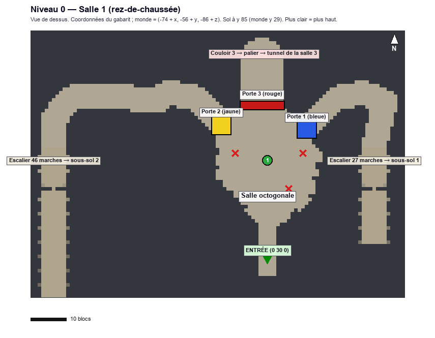
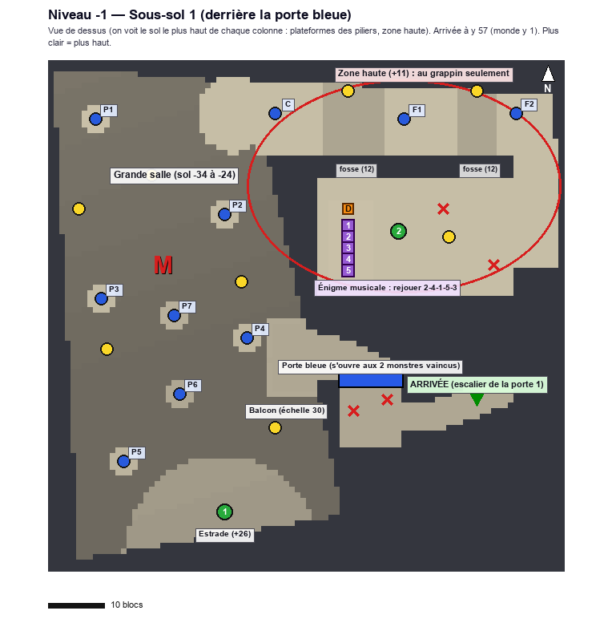
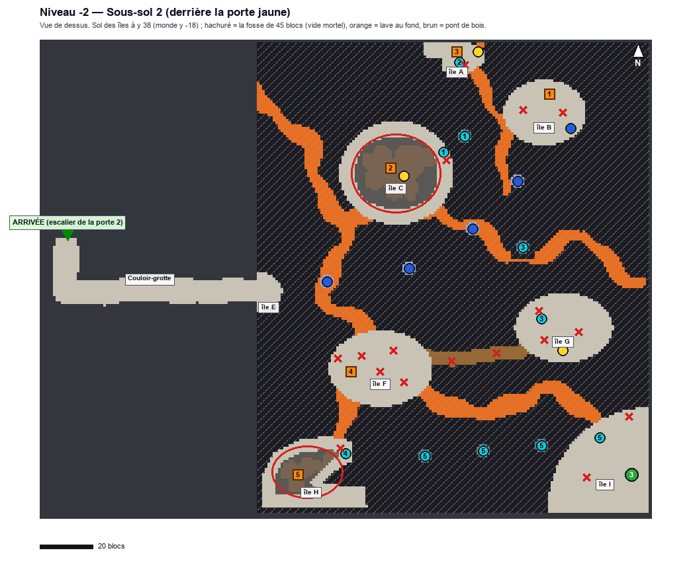
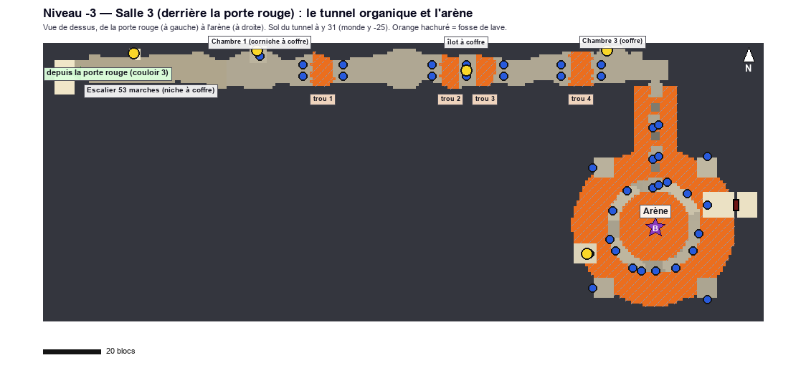
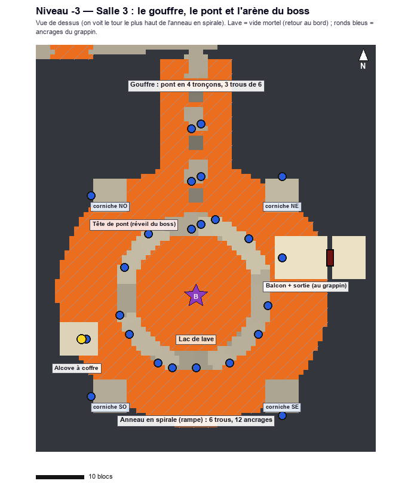

Le donjon 1 actuel du projet Kodistan. Dossier généré le 2026-11-17 à partir des générateurs (atelier/scripts/donjon_suspendu.py et suspendu_*.py), de la fiche atelier/docs/donjon_suspendu.md et des demandes de Luca. Régénérer : test-local/venv/Scripts/python.exe atelier/scripts/plan_pdf_donjon_suspendu.py.
À qui s'adresse ce document. À un agent (Opus) qui doit reprendre ce donjon ou le faire évoluer. Il décrit ce qui est construit (branche feature/donjon-suspendu, PR #49 vers main, en attente de Duncan), l'intention de game design derrière chaque choix, ce qui est vérifié par script et ce qui ne l'a pas encore été en jeu, et les règles du projet. Les plans utilisent les codes couleurs de Luca (§ 2).
1. En bref
Principe : un donjon qui se joue de haut en bas : une salle en surface et trois niveaux souterrains taillés dans la pierre. Construit salle par salle d'après les croquis GIMP de Luca : il décrit une salle, on la construit, on la teste, puis on passe à la suivante.
Objet du donjon : le grappin (mod du projet, version 3 : on vise un ancrage, on est tiré en ligne droite jusqu'à lui, on tombe dessous). On le gagne au sous-sol 1, on s'en sert ensuite partout.
Fil rouge : trois portes colorées au rez-de-chaussée, chacune ouverte par une clé de sa couleur, trouvée un niveau plus bas : clé bleue (rez-de-chaussée) → sous-sol 1 → clé jaune → sous-sol 2 → clé rouge → salle 3 et le boss, le Gardien des Racines.
Ingrédients : combats qui ouvrent des portes, coffres qui apparaissent en cinématique, une énigme musicale, une énigme de leviers qui font apparaître des piliers, des traversées de vide au grappin, un boss à points faibles qu'on frappe à l'épée depuis une rampe en spirale.
État : tout est généré et vérifié par script (quatre vérificateurs et 107 tests passent). En jeu : le rez-de-chaussée et le début du sous-sol 1 ont été essayés ; le reste n'a pas été vu en jeu.
2. Légende — les codes couleurs de Luca
Luca dessine ses plans sur GIMP avec ces codes (expliqués le 2026-11-16 pour le sous-sol 1, puis pour le sous-sol 2). Les plans de ce document les reprennent.
Code
Sens
Où on le trouve ici
Croix rouge
Monstre (zombie / squelette)
Zombies du rez-de-chaussée ; gardiens et monstres du sous-sol 1 ; ennemis des îles du sous-sol 2
Gros « M »
Mini-boss
Sous-sol 1, grande salle : le Rôdeur des Racines (grappin:rodeur, mod grappin 3.4.0+)
Rond bleu
Point d'ancrage permanent du grappin (avec plateforme quand il est dans le vide)
Piliers et corniche du sous-sol 1 ; piliers bleus du sous-sol 2 ; tous les ancrages de la salle 3
Rond cyan (numéroté)
Point d'ancrage qui apparaît quand on tire le levier du même numéro
Sous-sol 2
Carré orange numéroté
Levier ; le numéro donne l'ordre
Les 5 leviers du sous-sol 2 ; « D » = bouton de départ de l'énigme musicale
Rond jaune
Coffre (vide pour l'instant)
Coffres jaunes des sous-sols 1 et 2 ; alcove de l'arène ; les 4 coffres du tunnel (remplis par une table de butin provisoire)
Rond vert numéroté
Coffre qui donne un objet clé
Rez-de-chaussée : clé bleue ; sous-sol 1 : 1 = grappin, 2 = clé jaune ; sous-sol 2 : 3 = clé rouge. Ils n'existent pas au départ : ils apparaissent (cinématique) quand on a réussi l'épreuve.
Zone entourée de rouge
Annotation de Luca : zone à traiter à part (en hauteur, à monter jusqu'au plafond…)
Sous-sol 1 : la zone haute (+11) ; sous-sol 2 : les deux îles devenues montagnes à grotte
Sol hachuré
Vide (chute)
La fosse de 45 blocs du sous-sol 2 (mortelle)
Ajouts de ce dossier
Symbole
Sens
Beige (plus clair = plus haut)
Sol où l'on marche ; la teinte donne la hauteur
Orange hachuré
Lave au fond d'un vide (fosses du tunnel, gouffre, arène ; rivières du sous-sol 2)
Gris-beige
Escalier
Brun
Pont de bois délabré (sous-sol 2)
Bleu pâle
Plateforme d'un pilier bleu (sous-sol 2) ; cyan pâle : pilier qui sort du vide avec un levier
Carré violet numéroté
Bloc musical de l'énigme (numéroté du nord au sud)
Barre de couleur
Porte (bleue, jaune, rouge) ; barre rouge sombre : sortie scellée de l'arène
Étoile violette « B »
Boss (Gardien des Racines)
Flèche verte
Entrée ou arrivée d'un escalier
3. Le monde et la technique
Monde
« Donjon Suspendu », superflat profond (bedrock à y -64, 90 blocs de pierre, 2 de terre, herbe à y 29) : la place des trois sous-sols. Survie, difficulté normale. Prêt à copier : atelier/mondes/Donjon Suspendu.zip, à dézipper dans mod/run/client/saves/ ; la pose est automatique à la première ouverture (≈ 1 min, par étapes, ne pas mettre en pause), puis un /tp cliquable vers l'entrée (0 30 0).
Versions
Minecraft 1.21.1, NeoForge 21.1.216 (figé : ne jamais le changer), mod du grappin avec le golem (atelier/exports/grappin-3.0.4.jar, copié par test-local/lancer-client-test.sh)
Gabarit
336 × 120 × 208, posé en -74 -56 -86 (monde = gabarit + ce décalage), chargé en deux moitiés (forceload ≤ 256 chunks). Structures : suspendu_salle1, suspendu_ss1, suspendu_ss2, suspendu_ss3 (+ dalles des portes).
Hauteurs
Rez-de-chaussée : sol y 85 du gabarit (monde 29). Sous-sol 1 : arrivée à -28 (grande salle de -62 à -6). Sous-sol 2 : sol des îles à -47, fosse jusqu'à -92 (juste au-dessus du socle). Salle 3 : tunnel à -54, lac de lave de l'arène à -89.
Logique
Fonctions de datapack seulement (aucun bloc de commande) : suspendu_tick (combats, leviers, chutes), suspendu_load, la pose par étapes (suspendu_pose, _2, _2_N), les portes (suspendu_ouvrir_pN), les cinématiques (suspendu_cine_*), la remise à zéro /function atelier:suspendu_reset. Reposer tout : /scoreboard players set #suspendu atelier 0 puis /reload.
Grappin (après le mini-boss), puis clé jaune (après l'énigme musicale)
Porte 2 (jaune)
Le grappin : monter sur des piliers, traverser des fosses
-2 · Sous-sol 2
Clé rouge (après les 5 leviers)
Porte 3 (rouge)
Enchaîner les tirs au-dessus d'un vide mortel ; des leviers qui créent le chemin
-3 · Salle 3
La victoire (sortie de l'arène)
— (la suite reste à définir)
Tout à la fois : fosses, pont en ruine, anneau en ruine, combat à l'épée
4.2 Les règles qui tiennent tout
Une porte = une clé de sa couleur, présentée en main devant la porte (elle est consommée) ; la dalle se lève, sans cinématique. La seule porte sans clé est la porte bleue du sous-sol 1 : elle s'ouvre quand ses deux gardiens sont vaincus.
Les objets clés n'existent pas d'avance : leur coffre apparaît quand l'épreuve est réussie (combat, mini-boss, énigme, levier 5), en cinématique. Rien ne se prend par raccourci.
Le grappin 3 : portée 30 blocs ; le crochet s'accroche à un ancrage qu'il frôle à moins de 1 bloc ; on est tiré en ligne droite, on s'arrête à 1,2 bloc de l'ancrage et on tombe tout droit. Donc un ancrage se place juste au-dessus de l'endroit où l'on doit arriver, 3 à 4 blocs plus haut, et à 3,5 blocs du bord d'un trou. On ne s'accroche qu'aux blocs d'ancrage, jamais à la roche.
Les trous ne se sautent pas : au moins 5 à 6 blocs (un saut en courant en franchit 4 au mieux). Le vérificateur le contrôle partout.
Tomber : au sous-sol 1, on survit (12 blocs, échelle de secours) ; au sous-sol 2, la fosse est mortelle ; à la salle 3, la lave renvoie au bord d'où l'on vient (crochet décroché, chute lente, sans dégâts).
Lumière ≥ 5 partout où l'on marche : aucun monstre n'apparaît tout seul ; tous les ennemis sont invoqués par le donjon, une seule fois.
Cinématiques à la Zelda (datapack seul) : les joueurs proches passent en spectateur et regardent par une caméra qui avance en ligne droite sans jamais tourner (fluidité), puis retrouvent leur place, leur regard et leur mode de jeu. Maj quitte la caméra. Si une autre scène est en cours, l'effet a lieu tout de suite, sans caméra.
5. Niveau 0 — Salle 1 (rez-de-chaussée)

Un bâtiment octogonal posé sur la plaine (≈ 30 de large, 14 de haut), couloir d'entrée au sud. Au centre, un emblème octogonal ; lumière par 12 feux de sol et un lustre ; 13 pilastres.
Trois portes au nord, dalles colorées en arc avec une spirale : 1 bleue (nord-est), 2 jaune (nord-ouest), 3 rouge (milieu). Couloirs : 1 et 2 finissent par un escalier qui descend (27 marches vers le sous-sol 1 ; 46 vers le sous-sol 2), 3 est droit et mène au palier de la salle 3.
Combat : un joueur au centre → 3 zombies apparaissent ; tous morts → cinématique, un coffre (rond vert) apparaît au milieu avec la clé bleue.
6. Niveau -1 — Sous-sol 1 (derrière la porte bleue)

Petite salle d'arrivée (bas de l'escalier de 27 marches) : un zombie et un squelette apparaissent ; vaincus → la seconde porte bleue s'ouvre seule (cinématique).
Grande salle (≈ 50 × 85, 56 de haut) : on arrive sur un balcon (garde-corps, échelle de 30 barreaux vers le sol). Au sol : le mini-boss « M » (se réveille à moins de 22 blocs), des coffres jaunes, et au sud une estrade haute de 26 (échelle de 26). Mini-boss vaincu → cinématique → le coffre du grappin (vert 1) apparaît sur l'estrade.
Sept piliers P1–P7 (colonnes de 30 à 46 blocs, plateforme au sommet, ancrage 4 blocs au-dessus tenu au plafond) : on n'y monte qu'au grappin, depuis l'estrade (P4, P5, P6, P7) ou le balcon (P2, P4, P6, P7).
La zone haute (entourée de rouge, +11, en falaise) : depuis la plateforme de P2 on tire l'ancrage de la corniche C (caché à qui est au sol) et on tombe dans le hall. Le hall est coupé par deux fosses de 12 (F1, F2) : du bord ouest on tire l'ancrage au-dessus de la rive est. Tomber n'est pas mortel : échelle de secours.
La salle de l'énigme musicale (un zombie et un squelette à l'entrée) : 5 blocs musicaux (cloche, carillon, 8 bits, xylophone de fer, xylophone), une lampe de couleur au-dessus de chacun, un bouton de départ « D ». Solution en § 9. Réussite → le coffre de la clé jaune (vert 2) apparaît.
Décor organique : mousse, stalactites, stalagmites, lianes à baies lumineuses.
7. Niveau -2 — Sous-sol 2 (derrière la porte jaune)

Le couloir d'arrivée (bas de l'escalier de 46 marches) est une grotte (largeur et plafond qui ondulent, mousse, champignons lumineux, stalactites, racines, lianes) qui longe le sous-sol 1 jusqu'à l'île d'entrée.
La salle (≈ 148 × 178, 12 de haut) : huit îles au-dessus d'une fosse mortelle de 45 blocs (hachurée), au fond de laquelle serpentent 4 rivières de lave. Aucun garde-corps. Îles : entrée E, levier 1 (B), grande île du levier 2 (C, montagne à grotte), levier 3 (A), levier 4 (F), île du coffre (G, reliée à F par un pont de bois délabré de 38 blocs aux planches manquantes), île en pointe du levier 5 (H, montagne à grotte), quart de disque de la clé (I).
Les deux montagnes (entourées de rouge par Luca) montent jusqu'au plafond ; une grotte organique y est creusée (ruisseau de lave, stalactites, cristaux d'améthyste), le levier y est.
Ancrages bleus (toujours là) : 4 piliers dans le vide et un point sur l'île du levier 1 — de l'entrée on enchaîne les piliers jusqu'à l'île 1.
L'énigme des leviers : chaque levier tiré fait apparaître ses ancrages cyan (du même numéro), qui mènent à l'île du levier suivant. Ceux au-dessus du vide arrivent avec un pilier qui sort du fond de la fosse (5 piliers en tout). Chaque levier a sa cinématique : la caméra montre le pilier monter rang par rang (ou la chaîne descendre du plafond), puis l'ancrage. Le levier 5 ouvre la route de l'île de la clé et fait apparaître le coffre de la clé rouge (vert 3) au cours d'un long survol de la salle.
Ennemis : 17 emplacements, un zombie / squelette alterné, qui apparaissent quand un joueur approche de leur île ; ils ne bloquent rien.
8. Niveau -3 — Salle 3 (derrière la porte rouge)

Le tunnel : du bout du couloir 3, un palier de briques, puis un escalier de 53 marches brutes et un tunnel plat de 150 blocs, creusés comme une grotte (largeur 7 à 13, plafond 6 à 9, trois chambres plus hautes, mousse, racines, lianes à baies, champignons lumineux).
Trois fosses à franchir au grappin (4 trous de 6 à 7 blocs sur toute la largeur, lave 11 blocs plus bas) ; la deuxième est coupée par un îlot. Deux ancrages par bord ; chacun suffit seul à passer, dans les deux sens. Tomber renvoie au bord d'où l'on vient.
Quatre coffres : niche de l'escalier (à pied), corniche haute de la chambre 1 (au grappin), îlot (au grappin), chambre 3 (après la dernière fosse). Butin provisoire (table atelier:suspendu_tunnel).

Le gouffre et le pont en ruine : un gouffre de roche de 15 de large (lave 35 blocs plus bas) ; le pont n'est plus qu'en quatre tronçons séparés par trois trous de 6 ; deux ancrages par trou, au bout du tronçon d'en face.
L'arène : une caverne ronde (27 de rayon, 80 de haut), un lac de lave au fond d'où le Gardien surgit au centre. Autour, une rampe en spirale de 4 de large (rayon 12,5 à 16,5, hors de portée de ses bras), de 9 à 44 de haut, en ruine : six trous (trois en bas, trois en haut), une colonne brisée portant un ancrage de chaque côté de chaque trou ; la bande du milieu (≈ 1,8 tour) est entière : c'est là qu'on se bat.
Au grappin seulement : le balcon de la sortie (15 au-dessus du sommet de la rampe, sortie scellée par des barreaux), une alcove à coffre, quatre corniches (refuges, ancrage encastré dans le mur). 39 ancrages dans toute la salle 3.
9. Les énigmes et leurs solutions
Où
Épreuve
Solution
Récompense / effet
Salle 1
Combat
Aller au centre, tuer les 3 zombies
Cinématique ; coffre de la clé bleue
Salle 1
Porte 1
Clé bleue en main devant la porte bleue
La dalle se lève (cinématique) ; escalier de 27 marches
Sous-sol 1
Petite salle
Tuer le zombie et le squelette
La seconde porte bleue s'ouvre seule
Sous-sol 1
Mini-boss
Descendre l'échelle du balcon, vaincre le Rôdeur des Racines
Cinématique ; coffre du grappin sur l'estrade
Sous-sol 1
Zone haute
Grappin : sol (ou estrade) → P2 → ancrage de la corniche C → hall ; puis F1 et F2 depuis le bord ouest de chaque fosse
Accès à la salle de l'énigme
Sous-sol 1
Énigme musicale
Bouton « D » : la mélodie se joue (lampes) ; la rejouer par clic droit sur les blocs musicaux numérotés du nord au sud dans l'ordre 2, 4, 1, 5, 3. Erreur = on recommence ; les clics pendant la mélodie ne comptent pas.
Toutes les lampes s'allument ; coffre de la clé jaune
Salle 1
Porte 2
Clé jaune en main
Escalier de 46 marches vers le sous-sol 2
Sous-sol 2
Leviers
Enchaîner les piliers bleus jusqu'à l'île 1 ; tirer les leviers dans l'ordre 1 → 5 : chacun fait apparaître (en cinématique) les ancrages cyan qui mènent au suivant
Levier 5 : coffre de la clé rouge sur l'île I
Salle 1
Porte 3
Clé rouge en main
Palier, escalier de 53 marches, tunnel
Salle 3
Fosses, pont, anneau
Tirer l'ancrage au bout du tronçon d'en face, se laisser tomber dessus
Coffres du tunnel ; tête de pont ; hauts de l'anneau, balcon
Salle 3
Boss
Voir § 10
La sortie s'ouvre
10. Le boss : le Gardien des Racines
Un golem d'arbre géant, enfoncé dans le lac de lave au centre de l'arène (entité grappin:golem du mod). Il surgit 5 s après l'annonce, quand un joueur arrive en tête de pont (une seule fois).
Il se tourne lentement vers le joueur le plus proche et ouvre un point faible du côté opposé : il faut faire le tour de l'anneau pour aller le frapper. Cinq points faibles (masque, plastron, poing, dos gauche, dos droit), des bourgeons au bout de branches qui sortent du corps : ce qu'on voit est exactement ce qu'on frappe. Un seul ouvert à la fois, pendant 20 s ; un faisceau de particules rouges le signale de loin. Il lance aussi des graines depuis son poing.
Frappable à l'épée : pour chaque point faible et chaque orientation du golem (pas de 15°), une case de la rampe est à moins de 3 blocs de sa boîte (au pire 2,8 ; vérifié par script). Les trous de l'anneau ne font perdre aucune orientation.
Le grappin sert à franchir les trous du haut de l'anneau, à rejoindre les corniches (refuges) et le balcon de la sortie.
Mort : le mod appelle le tag grappin:golem_mort → la sortie s'ouvre, message « Le Gardien est vaincu ». Chute dans la lave : retour en tête de pont (ou au départ du pont si l'on tombait du pont). La remise à zéro tue le golem et referme la sortie.
11. Scénario attendu du joueur
1 Il arrive par le couloir sud dans la salle octogonale. Au centre, trois zombies surgissent. Il les tue ; la caméra montre un coffre qui apparaît au milieu : la clé bleue.
2 Clé en main devant la porte bleue : la dalle se lève (cinématique). Il descend l'escalier de 27 marches.
3 Dans la petite salle, un zombie et un squelette ; vaincus, la seconde porte bleue s'ouvre. Il débouche sur le balcon de la grande salle, voit les piliers, l'estrade, et descend l'échelle.
4 Le mini-boss se réveille. Vaincu, la caméra montre le coffre du grappin sur l'estrade. Il monte à l'estrade et le prend.
5 Premier usage du grappin : il se hisse sur un pilier, puis sur P2, d'où il aperçoit l'ancrage de la corniche ; il tire, tombe dans le hall, franchit les deux fosses au grappin (s'il tombe, l'échelle de secours le remonte).
6 Dans la salle de l'énigme, deux monstres ; puis il appuie sur le bouton, écoute la mélodie et la rejoue (2, 4, 1, 5, 3) : le coffre de la clé jaune apparaît.
7 Il remonte, ouvre la porte jaune, descend les 46 marches et suit le couloir-grotte jusqu'à l'île d'entrée du sous-sol 2 : devant lui, huit îles au-dessus d'un vide de 45 blocs.
8 Il enchaîne les piliers bleus jusqu'à l'île du levier 1 et le tire : la caméra montre un pilier qui sort de la fosse et l'ancrage qui apparaît. Il recommence île après île (leviers 2 à 5, deux dans des grottes au cœur des montagnes, un au bout du pont délabré), en évitant ou combattant les monstres des îles.
9 Le levier 5 déclenche un long survol de la salle : les derniers ancrages apparaissent un à un, puis le coffre de la clé rouge sur l'île du coin. Il s'y rend au grappin et prend la clé.
10 Retour au rez-de-chaussée : la porte rouge s'ouvre. Palier, escalier de 53 marches, puis le tunnel : il ramasse le coffre de la niche, franchit les trois fosses au grappin (îlot et corniche à coffres en chemin).
11 Au bout, le gouffre : il traverse le pont en ruine au grappin, trou après trou, jusqu'à la tête de pont. Annonce « Le Gardien se réveille… » ; 5 s plus tard, le golem surgit de la lave.
12 Combat : il court sur la rampe pour atteindre le point faible ouvert du côté opposé, frappe à l'épée, se sert du grappin pour les trous du haut et les corniches. Le Gardien meurt : la sortie du balcon s'ouvre ; il y monte au grappin.
12. Ce qui est contrôlé automatiquement
Vérificateurs (simulation de la marche et du grappin 3, tirs enchaînés en l'air compris) : rez-de-chaussée (portes fermées / ouvertes, escaliers d'une marche à la fois, lumière) ; sous-sol 1 (à pied jusqu'au coffre du grappin mais ni piliers ni zone haute ; au grappin, tout ; au moins 4 piliers depuis l'estrade) ; sous-sol 2 (étape par étape : chaque levier k fait atteindre le levier k+1 et pas plus loin ; la clé seulement après le 5) ; salle 3 (à pied jusqu'à la première fosse et rien au-delà ; au grappin tout ; trous ≥ 5 blocs ; chaque ancrage suffit seul ; portée d'épée ; lumière).
Tests (107) : géométrie, absence de recouvrement entre niveaux, fonctions de datapack (noms valides, fonctions appelées qui existent), cinématiques (caméra dans l'air, ≤ 1,2 bloc par tick, jamais de rotation), chaque particule existe dans le jeu (une seule particule fausse fait rejeter toute une fonction).
13. Points ouverts
Pas vu en jeu : l'escalier de 27 marches en entier, la salle de l'énigme et la clé jaune, tout le sous-sol 2 (dont les cinématiques des leviers), toute la salle 3 (tunnel, pont, anneau, boss), la pose par étapes.
Contenu à définir par Luca : le contenu des coffres jaunes, le butin du tunnel (table provisoire), d'autres ennemis que zombies et squelettes.
Après le boss : la sortie mène à une petite salle sans issue ; pas de butin du boss ni de cinématique de victoire.
Écarts aux croquis, à valider par Luca : ancrages ajoutés ou déplacés au sous-sol 2 (salle doublée), deuxième ancrage cyan 3, ancrage cyan 4 devant la grotte ; corniche C ajoutée au sous-sol 1.
Le namespace grappin du mod (golem, ancrages) attend la validation de Duncan.
14. Règles du projet à respecter (CLAUDE.md)
Jamais de push sur main ; une branche et une PR par sujet ; le merge est décidé par Duncan.
Ne jamais changer neo_version (NeoForge 21.1.216) ; tout cible cette version.
« Le build passe » n'est pas « ça marche » : tester en jeu avec le client du dépôt (mod/, ./gradlew runClient).
Un script ne suppose aucun état local ; livrer le monde prêt à copier (donjon_suspendu.py --zip).
Construire salle par salle d'après les croquis de Luca, avec ses codes couleurs ; signaler chaque écart au croquis.